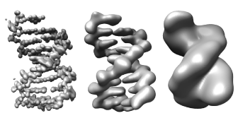

February 27, 2007
This dialog displays sequences of volume data sets. Examples are 3-D optical microscopy time series, or a sequence of single particle density map reconstructions. Each volume of a series has an index starting from 0 which is refered to as the time for that volume.
The volume series dialog is displayed using menu entry
Tools / Volume Data / Volume Series
A collection of volume data files can be opened and sorted by file name to form a series. Typically the files will have a common prefix and a numeric suffix, for example, tmv001.mrc, tmv002.mrc, ....
Currently the only supported format for a single file containing multiple volumes is Priism with file suffix ".xyzt" recognized as Priism time series data (optical microscopy).
Multifile volume series are opened using the Open... button at the bottom of the volume series dialog. Single file Priism time series can be opened with that dialog or with the Chimera File / Open... menu entry.

The volume data for a given time point is displayed using settings in the Volume Viewer dialog. The time slider in the Volume Series dialog controls which time point is displayed. The time values are integers starting from 0. Each time point is treated as a different volume data set and has its own entry in the data menu at the top of the Volume Viewer dialog. The Volume Series dialog just provides a convenient way of controlling the Volume Viewer dialog when looking at sequences of volume data sets.
The Volume Viewer dialog updates to show the settings of the current time point only after the time value stops changing for 1 second. This is to provide faster playback speed, as updating the volume dialog histogram is time consuming.
The Play button cycles through displaying data at each time. After pressing the Play button, the button name will change to Stop. The Play direction setting allows playing through the times forward or backward. With forward play the display loops back to the beginning when the last time is reached. Likewise backward play loops to the end and continues playing backwards. The oscillate setting first plays forward to the end and then reverses and plays backwards to the beginning.
The Maximum playback speed setting limits how fast the time value is updated when the Play button is pressed. This settings is to avoid excessively fast playback speed. If the Maximum playback speed checkbutton is off, then Chimera will render each time once and then advance to the next time. This fastest playback rate may be quite slow if the data set is large.
The display thresholds, style (surface, mesh, solid), step size, colors, subregion, and rendering options can be changed using the Volume Viewer dialog. When the volume series dialog displays a new time point it copies the settings from the time point currently displayed in the volume viewer dialog.
Note that the Volume Viewer dialog does not show settings for the most recently displayed time point until 1 second after the Volume Series slider has stopped moving.
If a volume data set that is not part of the time series is shown in the volume viewer dialog, then a newly displayed time point gets the settings of the previously displayed time point, and not the volume viewer dialog settings.
If the Normalize threshold levels switch is turned on then the threshold level for a newly shown time point is calculated so that its rank is the same as the rank of the threshold for the time point shown in the volume viewer dialog. That is, if the volume viewer dialog threshold level is greater than exactly 78% of volume data values for that time, then the threshold for the new time will be set such that it is greater than 78% of volume data values for the new time. The effect is that the volume enclosed by the contour surface is kept constant (strictly speaking the number of grid points is constant).
This normalization is useful when the signal level in the volume data changes over time. If the switch is off then the threshold value for a new time point is set to the same threshold value as the previous time point.
Each surface and solid rendering thresholds is adjusted as described.
Two options can dramatically increase the playback speed. The two time consuming steps in rendering volume data for a given time are reading the data from disk, and calculation the surface or solid rendering. Increasing the Data cache size to a value larger than the file size allows holding all data in memory so it is only read from disk the first time it is displayed. Turning on the Cache renderings option causes the most recently calculated surface or solid rendering for a specified number of time points to be saved in memory. These two settings can increase the playback speed by more than a factor of 10.
Setting the data cache size close to or larger than the physical memory in the computer will lead to the computer swapping data to disk when no more memory is available (called "thrashing"). This will cause degraded performance of the entire computer system.
Caching renderings does not use the data cache. There is no limit to how much memory will be used when caching renderings so judgment is required when turning this on. Surface renderings take memory proportional to the number of triangles composing the surface. Solid renderings take about 6 bytes per grid point using colormapping (default) or 20 bytes without using colormapping (an option in Volume Viewer, menu entry Features / Solid Rendering Options). For 2 byte data values this is up to 10 times more memory than the actual data set. So caching solid renderings is generally only feasible when looking at data with small x,y,z dimensions. Volume step size and subregion display reduce the rendering memory use in solid mode which is proportional to the number of data voxels displayed.
Volume data associated with cached renderings are always kept in memory even if this causes the total cached data to exceed the data cache size limit.
Turning on the Show markers switch enables placing spherical markers on the data and tracing spatial and temporal paths using the Volume Path Tracer tool. Each marker is labeled with the time of the volume on which it was placed. The labels are not shown. They are used by the volume series tool to display only those markers associated with the currently displayed time. Markers can also be shown for a specified number of earlier time points and later time points than the current time.
The volume series tool controls display of markers from the current marker set shown in the volume path tracer dialog. Multiple marker sets can be created and any one can be chosen for display using the path tracer dialog.
Placed markers can be saved with the Export XML option under the Sets tab on the Volume Path Tracer dialog. The markers can be loaded using the Chimera File / Open menu entry provided the file has the Chimera marker set file suffix *.cmm.
Volume contour surfaces can be colored to match the color of the markers in a zone near the markers using the Color zone around markers switch. All of the markers associated with the current time are used to color the current contour surface. The surface will be colored up to the specified distance away from the markers. The coloring does not apply when volumetric display style ("solid" mode in volume viewer) is used.
No session saving support. The volume series tool does not support session saving. A saved and restored session will have the volumes shown in the Volume Viewer dialog but they will not be associated with the Volume Series dialog, and there is no way to then apply the Volume Series dialog to the already open volumes. Placed markers and traced paths can be saved and reused with the volume series tool. See the section of markers and paths for details.
Slow playback when caching renderings. The second time a surface is displayed a graphics optimization (building an OpenGL display list) is done to speed up future drawing of that same surface by putting it in graphics card memory. That optimization is time consuming. The third time the surface is displayed will take much less time if the graphics card has sufficient memory.
Threshold normalization brightness glitches in solid mode. Sometimes a time point will appear dimmer than neighboring times when using solid rendering and threshold normalization. This can happen when only two nodes are used to specify the transfer function on the volume viewer histogram with one of the nodes at the highest data value. If a particular time point has a maximum data value much higher than neighboring times then that will substantially lower the brightness at typical data values. This can be remedied by adding a third node between the high and low nodes by ctrl-clicking on the volume viewer histogram.
February 27, 2007. Updated for Chimera version 1.2348 which uses NumPy instead of Numeric Python. Updated to use new Volume Viewer matrix statistics code in normalizing thresholds.
August 4, 2006. Added maximum playback speed, play direction, and color zone options.
August 2, 2006. Added support for placing markers and tracing paths. Requires Chimera version 1.2264 or newer.
August 1, 2006. Added copying of voxel size and data origin when varying time value.
July 27, 2006. Fixed bug where solid (volumetric) renderings were not closed even when caching was off. This could lead to a very large texture memory use when playing volume series with solid display.
February 3, 2006. First distributed version.